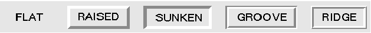

Le langage python 3 et l'Interface
Graphique Tkinter
|
| Le widget Checkbutton |
 retourne une valeur parmi deux selon
s'il est coché ou non. La valeur retournée est liée (grâce à l'option variable) à une variable qui peut
être de type IntVar(), StringVar() ou BooleanVar(). La valeur retournée est 0 ou 1
pour IntVar(), '0' ou '1' pour StringVar(), True ou False pour BooleanVar(). On peut
redéfinir les valeurs retournées à l'aide des options onvalue et offvalue.
retourne une valeur parmi deux selon
s'il est coché ou non. La valeur retournée est liée (grâce à l'option variable) à une variable qui peut
être de type IntVar(), StringVar() ou BooleanVar(). La valeur retournée est 0 ou 1
pour IntVar(), '0' ou '1' pour StringVar(), True ou False pour BooleanVar(). On peut
redéfinir les valeurs retournées à l'aide des options onvalue et offvalue.
La valeur courante du widget peut être modifiée par code en modifiant la
valeur de la variable associée: nom_variable.set(valeur)
La valeur courante du widget peut être lue comme suit: valeur = nom_variable.get()
| background (bg) |
Couleur
arrière plan. voir exemple ci-dessous |
| bitmap |
bitmap monochrome
à afficher |
| bd |
Épaisseur de la bordure en pixels. Améliore
l'effet de relief. Défaut=2. |
| command |
Procédure exécuté quand le widget et
coché/décoché |
| cursor |
Curseur
de la souris quand celle-ci survole le widget |
| disabledforeground |
Couleur
du texte quand le widget est désactivé |
| font |
Fonte
du texte du widget. exemple: font="arial 8 italic bold" |
| foreground (fg) |
Couleur
du texte |
| height |
Hauteur du widget en lignes |
| image |
image à afficher |
| indicatoron |
Si cette option est placée à 0, les cases à
cocher sont remplacées par des boutons enfoncé/relâché |
| justify |
Permet de justifier le texte (LEFT, CENTER,
RIGHT) dans le cas où celui-ci contient des \n pour retourner à la ligne |
| offvalue |
Définit la valeur de la variable quand le
widget n'est pas coché |
| onvalue |
Définit la valeur de la variable quand le
widget est coché |
| padx |
Marge horizontale du texte par rapport aux
limites du widget padx=3 => 3 pixels, padx='3m' => 3 mm, padx='1c' => 1 cm, padx='0.5i' => 0.5 inch |
| pady |
Marge verticale |
| relief |
Relief du widget. Défaut = SUNKEN  |
| selectcolor | Couleur
du checkbutton. Voir exemple ci-dessous |
| state |
Permet d'activer (NORMAL) ou de désactiver
(DISABLED) le widget je n'ai pas bien compris le rôle de la valeur ACTIVE |
| text |
texte à afficher sur le widget, \n permet un
texte sur plusieurs lignes |
| variable |
Définit la variable liée au widget. La valeur
de cette variable correspond à l'état du widget |
| width |
Largeur du widget en caractères |
| .deselect() |
place le widget dans son état 0 = OFF |
| .invoke() |
Appelle le callback du widget défini par
l'option command comme si le widget avait été cliqué |
| .select() |
place le widget dans son état 1 = ON |
| .toggle() |
change l'état du widget |
| from
tkinter import * def voir(): print(rb0.get(), rb1.get(), rb2.get()) fp = Tk() rb0 = IntVar() rb1 = StringVar() rb2 = BooleanVar() rb1.set('Oui') rb0_chk = Checkbutton(fp, text='RB0', variable = rb0, bg='pink', command = voir) rb1_chk = Checkbutton(fp, text='RB1', variable = rb1, onvalue='Oui', offvalue='Non', command = voir) rb2_chk = Checkbutton(fp, text='RB2', variable = rb2, selectcolor='yellow', command = voir) rb0_chk.pack() rb1_chk.pack() rb2_chk.pack() Button(fp, text="EXIT", command=fp.destroy).pack() fp.mainloop() |